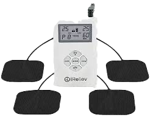

Être diagnostiqué.e ?
Pourquoi c'est difficile
Avoir un diagnostic peut prendre beaucoup de temps, d'énergie et d'argent. C'est compliqué de trouver des professionnel.le.s de santé qualifié.e.s,
(voir "trouver des professionnel.le.s de santé qualifié.e.s") il y a beaucoup d'examens qui ne sont pas bien fait, et ces examens sont chers.
Avoir un diagnostic est utile pour plusieurs raisons, mais ne pas en avoir n’empêche pas de ne pas s’occuper de ses douleurs.
Si l’étape du diagnostic prend trop de place que ce soit par manque d’accès à des médecins formés, à cause du prix trop élevé,
ou parce que la maladie est introuvable mais que les symptômes sont là, je conseille d’essayer de sortir de l’érrance médicale par ses propres moyens.
Par exemple, les professionnel.les de santé que je conseille d’aller voir sont les kinésithérapeutes, ce n’est
pas nécessaire d’avoir un diagnostic d’endométriose pour prendre un rendez vous.
Un diagnostic apporte surtout un peu plus de serieux de la part des médecins mais n’apporte en aucun cas un traitement.
La seule chose qu’on peut faire c’est traiter nos symptômes, pas la cause, et les symptômes ne dépendent pas du type d’endométriose qu’on a,
ni de la location, ni de la grandeur des liaisons.
S'attendre à ne pas être pris.e au sérieux et essayer de l'éviter
Les médecins sont peu renseignés et, si on tombe sur les mauvais, peuvent chercher à minimiser nos douleurs.
C'est pas parce qu'on ne coche pas TOUS les symptômes typiques d'un endométriose qu'on a pas d'endométriose,
c'est pas non plus parce qu'on a des symptômes que les médecins ne connaissent pas qu'ils ne sont pas réels.
Je conseille de noter ses symptômes avec l'échelle de la douleur (voir plus bas) pour gagner en crédibilité.
L'errance médicale ne s'arrête pas après le diagnostic.
Si tu as les moyens et l'envie d'avoir un diagnostic, les étapes :
1- Noter ses douleurs, prendre rendez-vous via resendo avec un.e médecin
2- Obtenir une ordonnance
3- Trouver un.e radiologue spécialisé.e en imagerie gynécologique !!!!
4- Faire une échographie ou un IRM, c'est souvent conseillé de faire des échographie endovaginale, donc qui passe dans le vagin.
Moi j'en ai pas fait parce que j'avais pas envie et qu'on ne m'avait pas prévenue. J'ai fait une abnominale qui a indiqué qu'il y
avait de l'endométriose puis j'ai fait un IRM.
Dans un interview d'Erick Petit, il appui sur le fait que parfois des lésions ne sont pas visibles à l'IRM, mais à l'échographie, et d'autres fois ça peut être l'inverse (ça dépend de l'endométriose).
D'autres fois encore l'endométriose peut juste être cachée et non visible, on non vue par des professionnel.le.s de santé qui ne font pas bien l'imagerie pour l'endométriose.
Test salivaire
Le test salivaire est maintenant disponible en france ! wouhou ! il coûte juste 700€. mince.Il faut l'avoir via des hopitaux qui sont en lien avec celui de Lyon qui a les tests (si j'ai bien compris). On peut être remboursé avec l'ALD, mais pour avoir l'ALD faut déjà avoir une preuve d'endométriose.
C'est un très bon moyen d'être diagnostiqué parce que beaucoup moins invasif que tout le reste, plus rapide et beaucoup plus certain. Par contre le prix c'est pire que tout le reste.
En quoi c'est utile ?
En dehors du fait d'être sûr qu'on a une endométriose et de pouvoir dire sans aucun doute "j'ai une endométriose", les traitements pour des douleurs pelviennes ne changent pas. Mais avoir un diagnostic donne accès à d'autres démarches administratives, yay!
Avoir un diagnostic permet d'avoir une ALD, et parfois la reconnaissance d'un handicap invisible auprès de la MDPH Les Maisons départementales des personnes handicapées .
Par contre, ces deux choses ne sont pas automatiques et demandent du temps et de l'investissement.
Une Affectation de Longue Durée (ALD) permet en théorie d'avoir certains soins remoursés à 100%. Sauf que je suis en ALD et du coup en pratique ça change pas grand chose, tout ce qui n'est pas conventionnée secteur 1 n'est pas remboursé. Donc à Paris pour la kinésithérapie, la gynéco, les échographie et les IRM ça change rien (ce qui est frustrant).
Du coup on pourrait se demander à quoi sert l'ALD? et la réponse est : pas grand chose ! Mais elle m'a quand même été utile, pour avoir ma pillule spéciale-endométriose-qui-est-en-fait-juste-une-pillule-contraceptive-à-trente-euros-pas-remboursés-sans-l'ALD-alors-que-c'est-le-seul-truc-proposé-comme-solution-et-c'est-même-pas-une-solution, pour avoir gratuitement une crème pour mon traitement (qui était à 30€), et surtout dernièrement ça m'a aidé à partir en ERASMUS.
Le dispositif erasmus prévoît si on a une ALD de donner 250€ par mois. Je crois qu'être boursier.e aide à être prioritaire (parce que c'est pas automatique non plus lol) mais c'est possible aussi sans être boursier.e.
J'ai pas d'autres exemples. Donc ça peut être utile, mais après avoir payé les examens bien chers (échographie, IRM) et avoir fait tout un tas de démarches.
Ma prochaine ✨démarche administrative✨ que je compte faire c'est de demander la reconnaissance handicap. Parce que j'ai un handicap invisible, du coup pourquoi c'est pas officiel ? Parce qu'on y connaît rien à mon handicap. Zut.
J'ai hâte de voir à quel point c'est compliqué et long, et à quel point ce sera utile ou non dans le cas de l'endométriose. Ce serait surtout pour compenser une mauvaise organisation des établissements scolaires que je fréquente, par exemple si j'avais eu une crise juste avant ou pendant mon dipôme j'aurais pas pu le passer (j'avais plutôt peur de ça lol). Ou encore pour avoir la possiblité d'aménager son emploi du temps sur un lieu de travail.
Dans certains cas on peut aussi avoir allocation, mais je vise pas les étoiles, l'endométriose reste un handicap complètement minimisé et incompris dans le milieu médical.
Trouver des professionel.le.s de santé au courant
clique ici pour accéder à un site de médecins
compétents pour l'endométriose
(principalement en IDF)
ou ici pour accéder à une liste de filières spécialisées en fonction des régions
Conseil important avant de voir un.e professionel.le de la santé : regarder les avis (si il y en a)
sur google maps, ça m'est arrivé de regarder les avis de médecins avec qui j'ai eu une mauvaise experience,
et de voir qu'ils avaient des mauvais avis et donc que jaurais pu les éviter si j'avais regardé en amont.
Surtout qu'un mauvais rdv peut vraiment retarder un diagnostic ou une prise en charge serieuse.
Autre conseil : prendre un compte qu'un rendez vous médical fatigue, prévoir un moment de repos après,
et aussi si possible retrouver une personne de confiance avec qui débriefer.
Un dernier pour la route : Ça peut paraître un peu bateau mais j'ai mit du temps à capter que certains rdv
me fatiguaient ou me stressaient trop et qu'il vallait mieux ne plus y aller.
Point important ✨les médecins doivent toujours demander avant de vous toucher, si il ne le font pas c’est grave✨
ok tout dernier: n'hésitez pas à parler des difficultées financières si vous en avez avec les médecins que vous rencontrez,
iels peuvent aider sur plusieurs points.
Qui aller voir ?
Je conseille d'avoir une médecin générale pour les ordonnances et tout, une gynéco si possible, mais ça peut être dur d'être remboursé.e.x, et parfois ça change pas grand chose par rapport à une médecin générale bien renseignée.Le plus important selon moi c'est une kinésithérapeute !
C'est aussi possible d'aller voir un.e algologue, un.e médecin de la douleur, de temps en temps mais pareil niveau remboursement c'est galère.
Beaucoup de médecins et personnes recommande d'aller voir un.e psychologue, pour pleins de raisons c'est un suivi qui aide à gérer ce que provoque l'endométriose, ou identifier des causes de stress qui empirent l'endométriose.
Moi j'attends pour aller voir des psy gratuites.
Il y a aussi un dispositif que je testerai peut être si ça avance pas, c'est un abonnement qui fait que les séances sont en parties remboursées, mettre lien.
Il y a aussi des cercles de paroles qu'on peut trouver via des associations comme mettre liens. J'ai pas encore testé mais peut être a un moment où j'aurais du temps. Je me suis aussi inscrite via des hopitaux a des petites semaines d'apprentissage sur différentes techniques qui aident à soulager les douleurs de l'endométriose.
En résumé, mon organisation c'est : j'ai une médecin pas loin de chez moi, que je peux aussi voir en visio, et qui me sert à faire les ordonnances. Je suis allée voir différent.e.s algologues et gynéco mais après le premier rendez vous j'ai trouvé que je n'avais pas beaucoup de nouvelles informations. Et j'ai très souvent rdv chez une kinésithérapeute, c'est indispensables pour moi.
L'Échelle de la douleur
L'échelle de la douleur est un outil qui permet de comprendre, pour soi même, mais aussi pour les autres, l'intensité de nos douleurs.
L'uiliser permet d'être pris.e plus au serieux par des médecins, de se rendre compte nous mêmes que c'est pas rien,
et surtout de mettre des mots sur ce qui nous arrive. Parce que ces douleurs peuvent être réellement handicapantes
mais comme la source est invisible on peut vite devenir fou.
La version la plus connue est un.e professionnel.le de la santé qui nous dit "sur 10 à quel point vous avez mal ?".
J'ai trouvé cette question absurde et incompréhensible pendant très longtemps, jusqu'à trouver une échelle de la douleur
expliquée avec des mots, la voici :
0 – Aucune douleur
1 – Douleur très légère, presque imperceptible
2 – Douleur légère, gênante mais facile à ignorer
3 – Douleur modérée, perceptible, peut distraire mais supportable
4 – Douleur modérée à forte, commence à gêner les activités courantes
5 – Douleur forte, difficile à ignorer, limite certaines activités
6 – Douleur intense, interrompt régulièrement les activités, concentration difficile
7 – Douleur très forte, accapare l’attention, empêche la plupart des activités
8 – Douleur très intense, difficilement supportable, besoin de s’allonger ou d’aide
9 – Douleur insupportable, incapacité quasi totale, nécessite intervention médicale urgente
10 – Douleur maximale imaginable, « pire douleur possible », décrite comme intolérable
Connaître ça m'a aidé à comprendre que mes douleurs étaient plus importante que ce que je disais. Les premières fois qu'on me posais des questions,
habituellement je disais "euh je sais pas trop 5 ? 6 ?" et avec ces détails j'ai compris qu'en fonction des periodes je pouvais plus me trouver entre
6 et 8.
Un évanouissement à cause de la douleur montre qu'on a atteint un 9 ou 10 sur l'échelle de la douleur. Avec les douleurs pelviennes certains pics
montent très rapidement, même si il ne reste pas ce n'est pas pour ça qu'on atteint pas des douleurs insupportable.
Ça met du temps d'écouter ses douleurs
et de se sentir légitime de souffrir parce que les douleurs pelviennes sont normalisées, mais c'est très important d'en prendre conscience pour ne pas
retarder une prise en charge.
Se faire dorer la pillule
Le fait d'être en aménhorrée artificielle (ne plus avoir ses rêgles) peut être mit en place par la prise d'une
pillule en continu
Prendre sa pilule en continu consiste à enchaîner les pillules contraceptives sans l'interruption de sept jours : cela permet de ne pas avoir de règles artificielles entre deux cycles.
.
C'est souvent la première chose proposée par les médecins, ça peut aider à diminuer les douleurs et ralentir ou arrêter l'évolution d'une endométriose, mais ça peut aussi empirer les choses.
Il n'y rien qui montre que la pillule est efficace contre l'endométriose, comme une gynéco m'a dit,
"parfois ça marche, parfois ça marche pas"
L'objectif de cette prise de pillule est d'enlever le plus de symptômes possible, pas de guérir.Du coup si les effets secondaires de la pillule marchent pas avec vous, faut faire le pour et le contre entre quel mal choisir.
On n'est jamais obligé. de prendre la pillule quand on a de l'endométriose, peut importe à quel point votre gynéco vous force, c'est pas un traitement, c'est pas une "solution contre l'endométriose", c'est une prise d'hormone et ça a beaucoup de défauts aussi.
En ce moment la pillule conseillée pour l'endométriose s'appelle Dienogest, je la prend en continu depuis deux ans, elle m'a permit de "stabiliser" mon etat. Je dis stabiliser dans le sens où si je vais à peu près bien physiquement, je vais rester à peu près bien (au lieu d'avoir une crise de deux semaines par mois qui chamboule tout). Mais ça n'a pas été une solution magique, quand j'ai commencé la pillule j'étais en douleurs chroniques et ce n'est pas le fait de ne plus avoir mes rêgles qui a tout arrangé, c'est grâce à une combinaison de pratiques que j'ai commencé à aller mieux.
J'en ai testé deux avant (parce que je suis tombée sur des médecins pas renseignés), chaque pillule est différente donc il faut trouver celle qui nous convient au niveau des hormones, celles que j'avais avant m'avaient mises des rêgles en continu (c'était hardcore), j'ai du finir par forcer auprès d'une gynéco pour qu'elle me fasse une ordonnance pour une autre pillule (celle pour l'endométriose) parce qu'au bout de six mois de rêgles j'en pouvais plus.
y a plus les règles
Maintenant j'ai plus mes rêgles et c'est sympa, mais comme je disais c'est pas ça qui a arrêté mes douleurs chroniques douleur qui dure depuis plus de 3 mois, pouvant associer plusieurs types de douleurs comme les douleurs inflammatoires, neuropathiques ou musculaires. .Ce n'est peut être pas une solution perenne, on sait qu'il y a des risques à prendre la pillule, et que ça fait nimp avec nos hormones, mais elle me convient pour l’instant.
La seule chose qui me pause problème est que je prends une pillule progestative qui est peut être une des causes de mes "intolérances". Il y a des personnes qui ont remarqué des ballonements à la prise de cette pillule et qui ont découverts qu'elles ne pouvaient plus manger ce qu'elles voulaient sans avoir de gros ballonements et douleurs à la digestion.
Je ne pense pas que ce soit la seule cause de mes intolérances mais elle peut être combinée au ralentissement de ma digestion et participer à tout ça. Je préfère quand même l'avoir parce que sans c'était invivable, j'avais des douleurs imprévisible et interminables. Elles sont toujours imprévisibles en parties aujourd'hui mais moins présentes que quand j'avais mes règles. Et surtout, la nourriture c'est compliqué, mais au moins je peux prévoir que je vais avoir mal si je mange quelque chose qui déclenche mes douleurs.
Dans les alternatives, parfois, si la pilule n'aide pas ou est impossible, c’est possible d’être en ménopause artificielle mais une autre montagne de problèmes apparaît. Il y a aussi la possibilité de prendre de la testostérone, pour plus de précisions, allez voir la case suivante.
J'ai aussi rencontré des personnes qui ne prenaient pas la pillule malgrès leurs endométrioses, mais en "acceptant de sacrifier" quelques jours par mois aux douleurs. Si j'étais dans ce cas d'avoir mal un ou deux jours par mois de façon prévisible je pense que je ferai pareil.
Médicaments, outils et autres démarches
Antalgiques
Les médecins m'ont souvent dit de prendre des antalgiques Médicament ou traitement qui sert à soulager la douleur, sans forcément agir sur sa cause. Exemples : paracétamol, ibuprofène, morphine. "avant la douleur" ce qui paraît absurde parce qu'on ne peut pas prévoir la douleur.J'ai fini par comprendre que ce qu'iels voulaient dire était que se mettre dans des conditions pour diminuer la douleur le plus possible faisait que l'antalgique était utile.
Pour moi ça voulait dire m'allonger dans un coin seule, ce qui peut être dur à trouver, mais quand je le fais j'ai effectivement beaucoup plus de diminution de la douleur après la prise de médicaments.
Sur les différents types de médicaments j'en ai testé beaucoup mais n'ai jamais trouvé de chose particulièrement efficace, je reste la plupart du temps au doliprane.
Il arrive que j'en ai besoin encore aujourd'hui, je sais qu'un doliprane n'est pas utile pour mes douleurs de congestion pelvienne, mais il peut être utile quand j'ai des mini saignements (parce que ça peut arriver sous pillule, particulièrement après l'avoir zappé pendant un jour sans faire exprès, oups).
Quand je remarque un début de fausses-mini-règles-pas-sensées-arriver je prends un doliprane pour prévenir les douleurs possibles.
Autres médicaments
Pour les douleurs chroniques et les douleurs centralisées on m'a plusieurs fois prescrits des antidepresseurs, il y en a plusieurs en fonction des types de douleurs. C'était pour agir sur les douleurs centralisées, et la réparation des nerfs, à long terme. Je n'ai pas bien essayé, j'ai préféré cherché des techniques de mouvements et massages mais je garde en tête cette possibilité.On m'a aussi parlé de la vitamine D (toujours pour diminuer le signal de douleurs chroniques).
Le TENS

Il y a aussi la possibilité d'avoir un TENS pour brouiller les signaux de douleurs.C'est un appareil qui diffuse un faible courrant éléctrique via des éléctrodes collées à la peau. Ça permet de brouiller le signal de douleur capté par les nerfs, ça s'appelle de la neurostimulation. En fonction des emplacements de la douleur les électrodes peuvent être posées à différents endroits du corps.
Le TENS peut aider sur le coup mais aussi sur le long terme. J'en ai eu un pendant six mois et c'était bien, mais celui que j'avais était avec des câbles éléctriques donc c'était pas très pratique. J'ai appris par la suite qu'il y avait d'autres modèles plus simple d'utilisation. Il y a possibilité d'être remboursé.e pour avoir l'appareil, mais ça demande de la determination comme d'habitude, à voir avec un.e médecin de la douleurs (un.e algologue).
Vous pouvez aussi aller voir à quoi ça ressemble sur le site officiel tens.
Le k-taping
Je n'ai pas encore testé mais je considère de plus en plus, particulièrement si je veux faire des randonnées.Le k-taping consiste à utiliser des bandes élastiques adhésives sur le bas du ventre pour soulager la douleur.
Il soutien, décolle un peu la peau pour moins capter la douleur, aide à décompresser la zone, réduit l'inflamamtion, et favorise la circulation lymphatique. Je pense que ça pourrait être utile pour mes douleurs de congestion pelvienne et pour mes adhérences.

Il existe plusieurs possibilités de comment coller les bandes de tape, c'est une façon possible, je pense aussi que ça dépend de chaque personne.
Ces bandes adhésives peuvent être portées entre trois et quatre jours, sous la douche, pour dormir etc. Il faut faire attention à ne pas trop tirer, même si elles sont élastiques, normalement il faut apprendre à les mettre avec un.e professionel.le de santé.
Les tapes sont trouvables en pharmacie, j'ai aussi vu qu'il faut acheter un spray pour les enlever sans s'arracher la peau.
La testostérone
Dans ce super article La testostérone, un traitement pour l'endométriose et un antidouleur ? Juliet Drouar parle de l'effet antidouleur que peut avoir la testostérone, je vous conseille de le lire parce qu'il est vraiment super.Il y a plusieurs témoignages, qu'elle cite et que j'ai vu sur les réseaux. Plusieurs personnes montre que prendre de la testostérone, pour une transition ou en petit dosage uniquement contre les douleurs, est efficace contre l'endométriose.
La testostérone est déjà produite et présente dans le corps des personnes assigné.e.s femme à la naissance, et certaines études ont démontrées que les moments de chute de testostérone dans le cycle sont des sources de douleurs :
Natural Variation in Testosterone is Associated With Hypoalgesia in Healthy Women
Pourquoi il n'y a pas de proposition de testostérone, alors que la première (et parfois seule) phrase des médecins quand on est diagnostiqué.e est "prenez la pilule" ?
Comme l'écrit Juliet Drouar,
"[..]La transition physique d’une femme cis,
produite par la prise d’œstrogènes et de progestérone
se fait dans le sens de la féminité et par conséquent
n’est pas relevée, vue. "
La seule transformation physique qu'apporte un faible dosage de testostérone est un peu de pilosité et de l'acné. Et ça suffit à faire fuir la recherche.
C'est donc possible de prendre une faible dose de testostérone, le problème quand on veut faire ça est de trouvé des médecins prêt à aider.
Opérations
Pour ce qui est des opérations, on ne m’en a jamais proposé parce que les médecins « attendent » que les autres traitements et tentatives ne marchent pas pour les proposer. Pour avoir vu des témoignages et études, les opérations ne sont pas du tout des solutions magiques qui enlèvent les douleurs.Il y a différentes opérations, certaines brûlent ou enlèvent des lésions, mais ces lésions sont difficiles à voir, enlever et surtout peuvent revenir après.
D’autres sont les hystérectomie (on enlève l’utérus) ou une ablation des ovaires (qui met en ménopause si les deux ovaires sont concernés).
De toutes façon l’endométriose va au delà des lésions, le corps subit d’autres dégâts en conséquences de l’endométriose, comme les adhérences, les douleurs neuropathies, nociceptives et bien d’autres encore.
Je ne connais pas le sujet de prés et j’ai vu beaucoup de témoignage de personnes qui parlent des douleurs qui persistent après leurs opérations donc je suis pas hyper convaincue. Puis selon les endométrioses le temps de récupération peut être très long et compliqué.
Kinésithérapie
Au bout d'un an de diagnostic j'ai commencé à voir une kinésithérapeute, J'étais soulagée quand je l'ai rencontrée parce qu'elle était très compréhensive de mes douleurs
contrairement à tous les médecins que j'avais eu avant.
Elle n'était pas spécialisée en endométriose mais m'a beaucoup aidé,
on m'a conseillé plus tard de trouver une kiné spécialisée. C'est ce que j'ai fait pour ma deuxième année de suivi et effectivement ses techniques sont plus
précise et adaptées à mes douleurs.
Qu'est-ce qu'on fait ?
L'objectif n'est pas de traiter l’endométriose elle-même mais plutôt de chercher à diminuer ses conséquences : les douleurs pelviennes chroniques, les dysfonctionnements du plancher pelvien ( hypertonie, Tension excessive des muscles du plancher pelvien dysurie, Miction douloureuse ou gênante, associée à une sensation de brûlures. constipation, etc).La première année on a fait des étirements, des exercices de mobilité, le test du coton tige test clinique qui évalue l’hypersensibilité à l’entrée du vagin. Il aide à identifier une vulvodynie provoquée en mettant en évidence une douleur excessive au toucher léger (type brûlure, piqûre, gêne aiguë), même en l’absence de lésion visible pour savoir où j'étais le plus sensible, elle a utilisé la technologie INDIBA technologie utilisant des ondes de radiofréquence pour réduire la douleur, détendre les tissus profonds et améliorer la circulation. et m'a appris des réflèxes à prendre au moment des douleurs.
La deuxième année avec une kiné plus spécialisée sur l'endométriose on a fait des massages interne par voie vaginale et externe sur le ventre. L'objectif est de venir décompresser les nerfs et leur laisser de l'espace, d'apprendre des reflexes de mouvement et de détendre certains muscles.
Mes kinés m'ont appris beaucoup de choses, ce qui avait changé dans mon corps avec l'endométriose, le fonctionnement de cette maladie, des techniques à mettre en place dans mon quotidien, que ce soit physique, pour remobiliser mes organes par exemple, ou comment réagir à la douleur pour ne pas rentrer dans des cercles vicieux.
Ces kinés m'ont appris comment fonctionne le périnée
 Ensemble de muscles situé entre le pubis et le coccyx, qui soutient les organes du bassin (vessie, utérus, rectum)
, les
douleurs chroniques
douleur qui dure depuis plus de 3 mois, pouvant associer plusieurs types de douleurs comme les douleurs inflammatoires, neuropathiques ou musculaires.
et par dessus tout elles m'ont apporté un soutien que je n'avais pas eu auparavant pendant des rendez vous médicaux.
Ensemble de muscles situé entre le pubis et le coccyx, qui soutient les organes du bassin (vessie, utérus, rectum)
, les
douleurs chroniques
douleur qui dure depuis plus de 3 mois, pouvant associer plusieurs types de douleurs comme les douleurs inflammatoires, neuropathiques ou musculaires.
et par dessus tout elles m'ont apporté un soutien que je n'avais pas eu auparavant pendant des rendez vous médicaux.J'ai appris récemment l'existence d'un nouvel outil pour l'endométriose que les kiné peuvent utiliser :
C'est un protocole pour l'endométriose qui s'apelle "endermologie", je l'ai pas testé mais j'aimerais beaucoup, j'ai vu des témoignages qui disent que ça soulage certaines douleurs.
C'est un gros appareil qui envoie des vibrations, aspire, et fait en même temps un palper-rouler* Technique de massage, manuelle ou mécanique, consistant à pincer la peau et à la faire rouler du bas vers le haut pour décoller les tissus.
Cette technique permet de travailler en profondeur pour atténuer les douleurs et l'inflammation chronique. Elle relâche les tensions tissulaires, aide à assouplir les tissus et à limiter les adhérences causées par l'inflammation.. Ça soulage les adhérences, les tensions et c'est sensé décongestioner.
Pour plus de visualisation et d'informations, je vous envoie vers cette vidéo.
Je pense pas que c'est adapté à toutes les douleurs, comme tout, et j'ai pas trouvé d'études sur ce protocole ! Je trouve juste le dispositif intéressant.
Organisation
Il faut être patient.e avec les suivis en kiné, parce que la plupart du temps les douleurs reviennent assez vite après chaque rdv en début du suivi. Le but du suivi et d'espacer les rendez vous de plus en plus, que les douleurs mettent de plus en plus de temps à revenir. Ça a été le cas pour moi, même si au début j'étais desespérée de voir mes douleurs revenir dès que j'étais dans les transports retours, maintenant ça dure beaucoup plus longtemps.Aucun suivi n'est pareil, que ce soit dans les pratiques ou dans le temps que le suivi prend. J'ai commencé par deux séances par semaines, puis au bout de deux mois une séance par semaine et après 5/6 mois j'ai fait une petite pause.
J'ai repris à la rentrée scolaire une fois par semaine, c'était devenu plus simple d'organiser mon temps autour de mes rendez vous. Actuellement je suis à l'étranger pour plusieurs mois, la kiné que je voyais m'a beaucoup rassuré et aidé sur la gestion des douleurs en autonomie.
Je conseille de choisir une kiné pas très loin de chez soi, de prévoir des activités douces après le rendez vous, et de prendre en compte la possibilité d'être fatigué.e.
Interview de Gayanneh Metillion, kiné spécialisée en pelvi-périnéologie
Qu’est-ce qui t’a amenée à t’intéresser au traitement de l’endométriose et des douleurs pelviennes ?
Je me suis d’abord intéressée à la kiné féminine dans son ensemble car la pelvi-périnéologie est un vaste domaine.
En tant que femme, j’avais tout simplement envie d’en savoir plus sur mon propre corps et mieux comprendre la physiologie
de chaque étape de la vie d’une femme. On pense d’abord à la grossesse et au post-partum avec la rééducation périnéale et abdominale.
Mais il y a aussi la rééducation pour les incontinences, qu’elles soient urinaires ou anales.
En traitant ce genre de pathologie, on se rend compte que des problèmes mécaniques cachent parfois de la douleur.
Donc je me suis tournée vers des formations plus spécifiques.
Comment se forme-t-on à la prise en charge de l’endométriose ?
En formation initiale la périnéologie est survolée. Je pense que la pratique serait un peu compliquée à mettre en place durant les cours, surtout en endo-cavitaire.
Elle se limite donc aux stages étudiants éventuels.
J’ai eu la chance de pouvoir en suivre et ils m’ont incitée à me former davantage.
Côté théorie : les bases, les incontinences urinaires et les prolapsus, ainsi que le post-partum sont étudiés.
Mais j’estime que la sensibilisation à la douleur, pas vraiment évoquée dans mon cursus, devrait occuper une place plus importante.
Néanmoins, chaque école et chaque programme peut un peu différer.
Fais tu des formations complémentaires ?
En pelvi-périnéologie il est essentiel de se former en plus de la formation initiale pour compléter sa théorie et sa pratique.
J’ai commencé à me spécialiser avant même d’être diplômée car j’en ai eu l’opportunité. On peut penser que ce n’est pas l’idéal car
on n’a pas vu assez de cas, mais ayant fait des stages dans ce domaine, je me suis au contraire sentie mieux armée pour aider mes
premières patientes en solo. J’essaie de faire au moins 2 formations par an pour acquérir un maximum de clés.
Est-ce qu’un diagnostic médical est nécessaire pour commencer une prise en charge en kiné ?
Pas du tout ! Pour la prise en charge par l’assurance maladie, il faut une prescription délivrée par un médecin, mais il n’est pas
nécessaire d’avoir un diagnostic précis. Vous pouvez vous présenter pour des douleurs pelviennes sans avoir de diagnostic d’endométriose.
Les kinés, en revanche, ne sont pas habilités à établir un diagnostic et n’en donnent jamais.
Est-ce que connaître l’emplacement exact des lésions (IRM) change beaucoup ta manière de travailler ?
Connaître l’emplacement des lésions peut apporter des pistes de points à travailler mais je n’aime pas vraiment m’y fier, je me réfère à mon
ressenti couplé à celui de la patiente.
En effet, on sait aujourd’hui que les échographies ou IRM permettent des diagnostics mais il existe une
réelle dissociation radio-clinique, c’est-à-dire que ce qui est visible à l’imagerie n’est pas toujours corrélé aux symptômes de la patiente.
Une patiente peut être très douloureuse avec peu de lésions visibles et une autre ne pas avoir de symptôme sur des lésions évidentes.
Il y a aussi des lésions qu’on ne voit pas.
Est-ce que ce sont les douleurs vécues par la patiente qui orientent le travail en séance ?
En grande partie, car ses symptômes dictent nos séances, mais j’aime conseiller mes patientes.
C’est-à-dire qu’en douleur on va se concentrer sur deux grandes sphères, l’abdomen et le pelvis.
On peut aller voir ailleurs évidemment mais ceux sont nos deux chevaux de bataille.
Si la patiente a des plaintes pelviennes, je lui proposerai quand même de travailler sur l’abdomen et les viscères et inversement.
Est-ce que tu observes des cas ou des profils récurrents dans tes suivis ?
Oui, les profils des patientes douloureuses peuvent varier mais on retrouve beaucoup de similitudes, notamment au niveau des symptômes.
Pour toute patiente, avec ou sans diagnostic je vais poser des questions similaires lors de mon bilan.
Par exemple, je demande si la patiente a des dysménorrhées (douleurs pendant les règles), dyspareunies (douleurs au rapport),
troubles urinaires ou digestifs (dysuries (difficultés/douleurs à uriner), dyschésie (constipation, troubles du transit intestinal), ...),
fatigue chronique, douleurs projetées, ...
Comment organises-tu un suivi ?
Je vois mes patientes douloureuses environ une fois par semaine en début de parcours, puis, plus les douleurs s’estompent et
plus la qualité de vie s’améliore, plus nous espaçons les séances.
Qu’est-ce qu’il est essentiel de comprendre sur l’endométriose quand on est patient.e ?
C’est parfois dur à entendre mais il est essentiel de comprendre qu’on ne guérit pas de l’endométriose... on gère les symptômes.
A l’heure actuelle, il n’y a pas de réel traitement, on ne peut pas dire "je n’ai plus d’endométriose".
Est-ce qu’il t’arrive parfois de ne pas identifier l’origine d’une douleur ?
L’origine de la douleur est toujours floue, est-ce réellement une lésion qui fait mal, est-ce que ça ce ne serait seraient pas des adhérences ?
J’essaie de chercher une hypomobilité, une tension, une densité plus importante, un indice qui guide ma main.
J’essaie de le travailler et ensuite on voit si c’est positif. Parfois oui la patiente est soulagée, parfois il reste quand même de la douleur car elle est centralisée.
Une douleur peut se centraliser, c’est-à-dire que le cerveau va enregistrer, mémoriser la douleur. Cette zone sera ensuite associée à une douleur quoi qu’il arrive,
même pour une stimulation à l’origine non douloureuse.
On retrouve souvent des hypertonies dans les cas de douleurs pelviennes, ces hypertonies s’entretiennent dans un cercle vicieux de la douleur : j’ai une douleur, cette douleur est stressante, elle ne passe pas forcément, je me contracte, j’ai encore plus de douleur.
Quand on n’arrive pas à avancer en kiné, il peut être intéressant d’avoir une prise en charge de la douleur par un algologue (médecin spécialisé dans la prise en charge de la douleur).
Que penses-tu de la notion de somatisation dans le contexte des douleurs pelviennes ?
Somatiser, c’est quand le corps exprime une douleur psychique. C’est assez courant car cette zone est très taboue et sexualisée à la fois.
Nombre de femmes sont confrontées à des agressions ou traumatismes. J’englobe tout, la notion de traumatisme est un spectre large : du deuil, à
l’accident de voiture ou l’agression physique, ce n’est pas forcément sexuel, quand ça l’est je pense que ce doit être pire.
La somatisation peut prendre plusieurs formes au niveau périnéal : hypertonie, vaginisme, vulvodynie, ... Dans ces cas-là, j’essaie d’expliquer
aux patientes que le périnée est un muscle comme un autre, c’est-à-dire qu’il fonctionne de la même manière, sur une amplitude.
Vous pouvez tendre votre bras et le plier, comme vous pouvez serrer votre périnée ou le relâcher. Mais parfois une somatisation, par exemple,
(car il existe d’autres causes) peut mener à une sidération musculaire, comme en post-opératoire.
DÉFINIR SIDÉRATION MUSCULAIRE
Et de ce qui peut être qualifié de placebo, des thérapies comportementales cognitives, magnétisme, etc. ?
Tout ce qui fait du bien aux patientes est bon à prendre, il faut tester, certaines adhèrent, d’autres non.
Quelles sont les habitudes/pratiques auxquelles tes patient.e.s doivent s’habituer de leur côté ?
Je conseille à mes patientes de mettre en place des petites routines d’auto-massage, parfois périnéal, parfois juste abdominal, des exercices de respiration,
des étirements, le fameux contracté-relâché pour mieux relâcher, ...
Que penses-tu de l’alimentation anti-inflammatoire pour aider les douleurs pelviennes ?
C’est un très bon outil pour aider les patientes dans leur gestion des douleurs car l’endométriose est une maladie inflammatoire.
Certaines patientes témoignent tout de même de la difficulté de poursuivre une vie sociable normale lorsque l’on essaie ou en
essayant d’observer un régime alimentaire trop contraignant.
Je pense que la frustration parfois provoquée fait tout autant de dégât qu’un petit écart alimentaire, mais je ne suis pas spécialiste.
Est-ce qu’il y a quelque chose qui te semble souvent mal compris dans l’endométriose ou dans la manière d’en prendre soin ?
Ce qui est peut-être encore mal compris c’est que l’endométriose n’est pas une maladie gynécologique mais bel et bien une maladie systémique,
qui touche le corps dans sa globalité. Une prise en charge pluridisciplinaire est vraiment la clé d’un soulagement des douleurs quotidiennes sur le long terme.